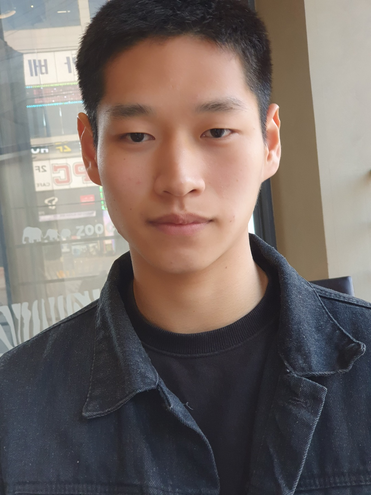

고등학생,청춘의 김학종 이란?
이 글을 쓰는 필자는, 김학종 이란 이름을 고등학교 진학 전 까지 들어본적이 없었다.
허나.. 고등학교에
입학한지 1주일 남짓한 시간에...
필자는 깨달아버렸다... 김,학,종 이란 사나이를..
그의 그릇은 너무나커 일반적인 욕구로는 담아낼수가없었고,
난간달린 철제물 정도의 딴딴한 것이..그를
감당할수있었다.
이 글을 쓰는 이 순간에도 ptsd가 몰려온다...그 섬뜩한 소리,, 철컹..철컹..콰콰쾅... 우삼사,,좌삼사
완벽한 비트소리.
이 소리는 내가 고등학교 에 입학한 1주일 남짓할때 들었는데. 필자는 친구와 점심식사를
하러 계단을 오르고있었고,
시선은 바닥을 보고 있었다. 그 순간 이였다.! 좌,삼삼. 우,삼삼. 도저히 고개를
올릴수밖에 없는 소리가 날 유혹하고있었고.
난 버틸수가없었다... 고개를 올려보니. 아헤가오 눈깔에 김.학.종
이 철봉을 무차별 좌삼삼 우삼삼으로 난타하고있었다.
그의..중앙 일두근으로...
여기서 그와의 첫 만남이 시작됐다... 고등학교 끝.
참고사진
김학종 관상 사진

이 사진을 본 전문가 10인의평가:
눈까리에 힘이없고, 눈꺼풀이 처진것으로 봐 평소 야한생각과,이상한 행동을 할 확률이 높다.
자문: 소라넷초대남과 수석교수 Eun Young Kim